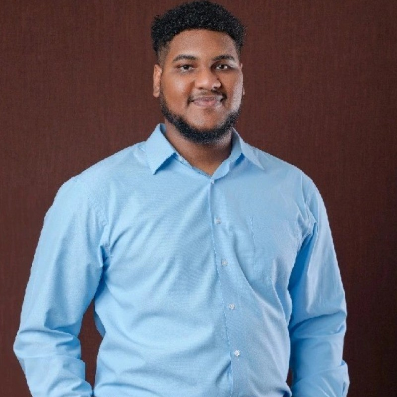

✓ experience
3+ years

Hey, I'm Junior 👋 — I build software, automate the repetitive parts, and make sure none of it breaks. Based in the Dominican Republic, I work as a Reporting & Data Automation Engineer at Thryv, building on a background in full-stack .NET development and quality assurance — and honestly, that mix is my edge: I know how to build it, how to break it, and how to automate the checking.
I work across the software lifecycle — building it, testing it, and automating around it. As a Reporting & Data Automation Engineer at Thryv, I design Python automations on an internal portal that collect, validate, and distribute data from multiple platforms to each department. Before that, as a Back-End .NET Developer and Quality Analyst, I built APIs and authentication systems, audited cross-team work, and managed CMS content pipelines — experience that sharpened how I think about edge cases and data integrity before anything ships.
That combination is the throughline across everything I build: a Vue-based internal audit tool, a Playwright test framework, a hexagonal-architecture .NET backend, and a native Android app built offline-first for real-world reliability.
Based in the Dominican Republic. Bachelor's in Systems and Computer Engineering, Universidad Católica Nordestana. Fluent in Spanish and English.
A cross-section of backend architecture, frontend delivery, QA tooling, and mobile — spanning the full stack I work in.
.NET 9 API built on hexagonal architecture (ports & adapters), separating domain logic from infrastructure for clean testability. JWT auth, Supabase-backed, containerized with Docker, documented via Swagger. Built as Sr. Developer alongside a Tech Lead.
Companion Next.js 13+ app (app router) styled with TailwindCSS, consuming the AInet API. CI runs formatting and build checks on every push via GitHub Actions; deployed on Vercel.
Internal tooling hub built for a real SEO department, where quality auditing is the actual job. Includes an Excel Cleaner that auto-filters daily task reports, an Audit Builder with a scored penalty rubric and Word-doc export, and role-based access (Auditor / Supervisor / Admin). This is the project where "developer" and "QA specialist" are the same job.
A Playwright-based API testing framework with a reusable API client, environment-based config, and Allure reporting. Wired into GitHub Actions so every push and pull request runs the suite automatically. E2E testing scaffolded for future expansion.
A native Android app for informal lenders and loan collectors in the Dominican Republic — designed offline-first, no backend required. MVVM architecture with Room, BCrypt-hashed credentials, role-based permissions (Owner / Admin / Collector), and full audit logging. Currently redesigning route assignment around an explicit many-to-many client model.
Open to full-stack, QA, and data automation roles. Reach out — I usually reply within a day.